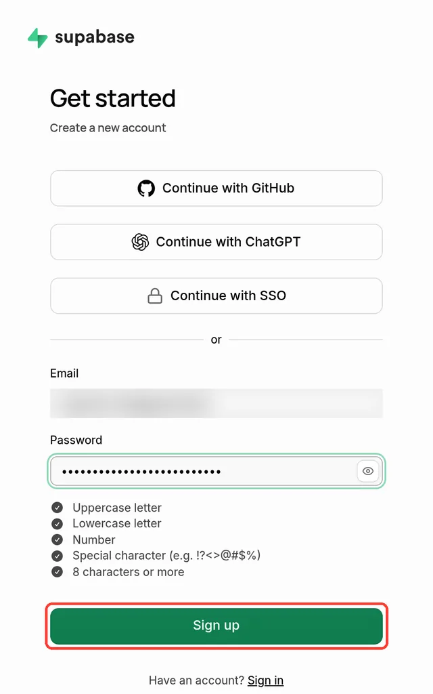

Send Apple Card transactions to Supabase
WalletFeed sends your Apple Card, Apple Cash and Savings transactions from your iPhone to a Postgres database in your Supabase project. You copy the project URL and the publishable key from Supabase to WalletFeed, and then you paste the SQL from WalletFeed in the Supabase SQL Editor.
Before you start
You must have:
- An iPhone with iOS 26 or a newer version
- WalletFeed, with access to your Wallet accounts
- WalletFeed Pro, a subscription with a 1-week free trial, or a one-time Lifetime purchase
- A Supabase account, or an e-mail address for a new account
- A web browser on a computer or on your iPhone.
WalletFeed is available only in the US.
Step 1: Make a Supabase project
-
If you have a Supabase project for your transactions, go to Step 2.
-
On your computer, open the Supabase sign-up page in a web browser.
-
Type your e-mail address in the Email field.
-
Type a password in the Password field.
-
Click Sign up.

-
If Supabase sends you an e-mail, open the hyperlink in the e-mail.
-
In the Supabase dashboard, make a new project.
-
Complete the form for the new project.
-
Wait until the new database starts.
Step 2: Find the project URL and the publishable key
- In your Supabase project, open the Connect dialog.
- Find the project URL. The URL starts with
https://and has.supabase.coat the end. - If your project has no publishable key, make a publishable key in Settings › API Keys.
- Find the publishable key. The key starts with
sb_publishable_. - If Supabase is open on your computer, send the URL and the key to your iPhone (for example, with AirDrop).
Step 3: Add Supabase in WalletFeed
-
On your iPhone, open WalletFeed.
-
Tap Destinations.
-
Tap + at the top of the screen.

-
In the Sheets & Databases section, tap Supabase.

-
If WalletFeed shows the WalletFeed Pro screen, get WalletFeed Pro. Then the Supabase form opens.
-
Copy the publishable key.
-
Paste the key in the Publishable Key field.

-
Copy the project URL.
-
Paste the URL in the field below the key. The field shows
https://abcd.supabase.countil you paste the URL.
Step 4: Make the table in Supabase
The SQL from WalletFeed makes the walletfeed_transactions table in your project. Supabase tells you that the publishable key is safe to show in an app. Thus, the SQL also adds a policy that lets only this WalletFeed destination read the table and write to it. A person with only the publishable key cannot read your transactions.
- In WalletFeed, tap Share SQL. iOS opens a menu with Copy.
- If Supabase is open on your computer, send the SQL to your computer (for example, with AirDrop).
- If Supabase is open on your iPhone, tap Copy in the menu.
- In your Supabase project, open the SQL Editor.
- Paste the SQL in the editor.
- Click Run.
Step 5: Start to send transactions
- On your iPhone, open WalletFeed again.
- Tap Add. WalletFeed reads one row of the table to make sure that the URL, the key and the SQL are correct.
- If WalletFeed shows an error below Share SQL, refer to If there is a problem.
- Read the message Send Transactions to Supabase? It tells you the data that Supabase will receive and the accounts.
- Tap Send. WalletFeed adds the destination and starts to send your transactions.
- In Supabase, open the Table Editor.
- Select the
walletfeed_transactionstable. Each transaction is one row.
Columns in the Supabase table
Each transaction is one row in the public.walletfeed_transactions table. WalletFeed writes these values:
| Column | Postgres type | Value |
|---|---|---|
id |
text |
The WalletFeed ID of the transaction. This column is the primary key. |
date |
date |
The day of the transaction, in the time zone of your iPhone. |
merchant |
text |
The merchant name, or the description if Wallet has no merchant name. |
amount |
numeric |
The value of the transaction. Purchases and fees have a value less than 0. Payments and refunds have a value more than 0. |
currency |
text |
The currency code, for example USD. |
category |
text |
The WalletFeed category, for example Groceries or Travel. |
status |
text |
The status in Wallet, for example pending, authorized or booked. |
pending |
boolean |
true when the status is pending or authorized, and false for a different status. |
account |
text |
The account name, for example Apple Card. |
description |
text |
The description of the transaction in Wallet. |
type |
text |
The transaction type in Wallet, for example pointOfSale or refund. |
mcc |
integer |
The merchant category code. |
foreign_amount |
numeric |
For a purchase in a different currency, the value in that currency, with the same sign as amount. |
foreign_currency |
text |
The code of that different currency. |
For a purchase in dollars, foreign_amount and foreign_currency have no value (null). When a transaction changes, WalletFeed updates the row that has the same id.
Your transactions go from your iPhone directly to your Supabase project. WalletFeed has no account and no WalletFeed servers. After Supabase receives your transactions, the terms of Supabase are applicable to them.
New and changed transactions
While WalletFeed is open, Supabase receives changes in seconds. When WalletFeed is not open, iOS starts WalletFeed approximately 1 hour or less after a change in Wallet. If Background Sync is on in Settings › Sync, WalletFeed then sends the change. Background Sync is on until you set it to off.
A pending charge has the value true in pending. When its status changes to booked, WalletFeed updates the same row. WalletFeed deletes the row of a declined or expired charge, and the row of a transaction that Wallet removes.
WalletFeed writes a refund in a new row. The refund has a value more than 0 in amount.
Send previous transactions
A new destination also receives previous transactions from the start date in Settings › Sync › Initial History. Initial History is All until you change it.
To send transactions from a different start date, use Send History:
- In WalletFeed, tap Destinations.
- Tap the Supabase destination. Its name starts with Supabase ·.
- Tap Send History.
- Tap 30 Days, 90 Days, 1 Year or All.
Supabase keeps one row for each transaction.
To stop Send History:
- Tap Send History.
- Tap Stop Sending.
Change or remove the destination
-
In WalletFeed, tap Destinations.
-
Tap the Supabase destination.

The screen of a Supabase destination has the same controls. It also has Project, Share SQL and Replace Key, but not Replace Token.
To send only some transactions:
- Set Filter to on.
- Select the transactions with Accounts, Categories, Minimum and the other controls.
Choose what to send tells you about each control of the filter.
To stop the destination and keep it, set Enabled to off.
To use a different publishable key:
- Tap Replace Key.
- Paste the new key in the Publishable Key field.
- Tap Replace. WalletFeed keeps the new key only if WalletFeed can read the table with it.
In the destination, Share SQL gives the SQL with the token of this destination. Thus, you can use this SQL in the SQL Editor again. This SQL keeps the rows in the table. If the table does not have the foreign_amount and foreign_currency columns, the SQL adds them.
To remove the destination:
- Tap Delete.
- Tap Delete again.
The rows that WalletFeed sent stay in your Supabase table. You can delete these rows or the table in Supabase.
If there is a problem
If you cannot tap Add
WalletFeed lets you tap Add only when the form has a key and a correct project URL. If the key is a secret key, you cannot tap Add, and WalletFeed shows "Use the publishable key. Secret keys skip the table's policy."
- Copy the publishable key from the Connect dialog again. The key starts with
sb_publishable_. - In WalletFeed, clear the Publishable Key field.
- Paste the key in the Publishable Key field.
- Copy the project URL from the Connect dialog again.
- In WalletFeed, clear the field below the key.
- Paste the URL in the field below the key.
If WalletFeed shows "Key rejected. Copy the publishable key again."
Supabase did not accept the key, or the SQL that you used came from a different Supabase form. Each time you open the Supabase form, WalletFeed makes new SQL with a new token.
- Copy the publishable key from the Connect dialog again.
- In WalletFeed, clear the Publishable Key field.
- Paste the key in the Publishable Key field.
- Tap Share SQL.
- Tap Copy, or send the SQL to your computer (for example, with AirDrop).
- In Supabase, paste the new SQL in the SQL Editor.
- Click Run.
- In WalletFeed, tap Add.
If WalletFeed shows "Table not found. Run the SQL, then try again."
The project has no walletfeed_transactions table. For example, you did not click Run, or you used the SQL Editor of a different project.
- In Supabase, open the project that has the URL from Step 2.
- Open the SQL Editor.
- In WalletFeed, tap Share SQL.
- Tap Copy, or send the SQL to your computer (for example, with AirDrop).
- In Supabase, paste the SQL in the SQL Editor.
- Click Run.
- In WalletFeed, tap Add.
If the destination shows "Authentication failed" or "Rejected (HTTP 404)"
Supabase did not accept the key or the token, or the table is not in the project. For example, SQL from a different WalletFeed destination replaced the token in the policy of the table.
-
In WalletFeed, tap Destinations.

-
Tap the Supabase destination.
-
Tap Share SQL.
-
Tap Copy, or send the SQL to your computer (for example, with AirDrop).
-
In Supabase, paste the SQL in the SQL Editor.
-
Click Run.
-
In WalletFeed, tap Send Test.
If Send Test shows an error, replace the key:
- Copy the publishable key from the Connect dialog.
- In WalletFeed, tap Replace Key.
- Paste the key in the Publishable Key field.
- Tap Replace.
If Supabase stopped your project
The Supabase pricing page tells you that Free plan projects "are paused after 1 week of inactivity".
- On your computer, open the Supabase dashboard.
- Select the organization of the project.
- Select the project.
- If Supabase stopped the project, click Resume project.
- If Supabase shows a dialog, obey its instructions.
- In WalletFeed, open the Supabase destination.
- Tap Send Test.
If no new rows show in the table
WalletFeed sends changes when it is open, or when iOS starts it in the background.
- Open WalletFeed.
- Make sure that Background Sync is on in Settings › Sync.
- Open the Supabase destination.
- Make sure that the destination shows no error below Last Sync.
- Tap Send Test. Supabase receives a test row with the description
WalletFeed test transaction. - In the Supabase Table Editor, delete the test row.
Related
Updated October 30, 2026